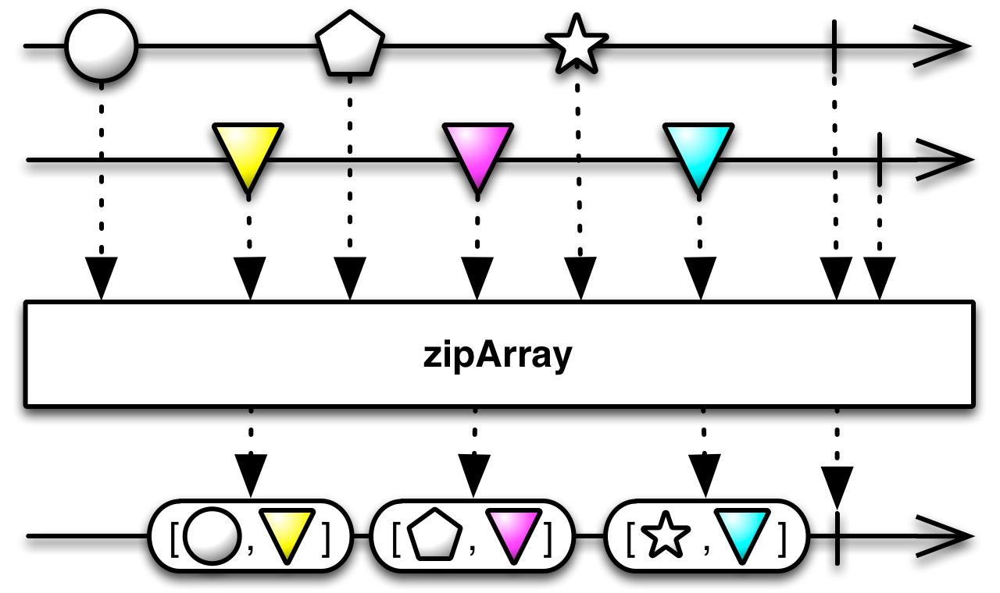

Zip array¶
-
classmethod
Observable.zip_array(*args)¶ Merge the specified observable sequences into one observable sequence by emitting a list with the elements of the observable sequences at corresponding indexes.
Parameters: args (Tuple) – Observable sources. Returns: Returns an observable sequence containing lists of elements at corresponding indexes. Return type: Observable
Under construction...